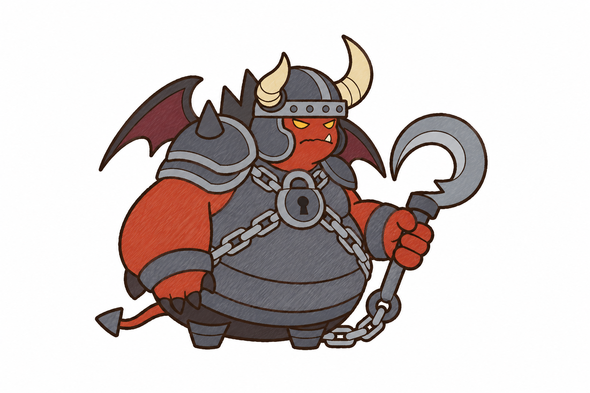

Ảnh động vẽ bằng bộ vẽ của mình ở 30 khung/giây. Khối xám là chỗ đối thủ (đứng xa 1,9 lần chiều cao) để thấy phần code game làm: cú lao
của đòn đánh được sân nắn tới đối thủ; móc và xích bay được co quãng tới đối thủ thật. Chưa có VFX: lửa bốc trên xích, vệt lửa + khói khi quay,
vòng xích trói, cột lửa thiêu, bụi đáp đất là lớp hiệu ứng làm ở bước vào game (rig đã đặt sẵn sự kiện và xương bám).
Trang Spine Web Player của rig: quy_xich_1/rig/xem.html.
Chiêu cuối (3,2 s): giơ móc (sự kiện lua_xich: xích bốc lửa), quay xích qua đầu ba vòng nhanh dần (VFX vệt lửa + khói theo móc), ném; móc + xích bay tới đối thủ, quấn trói (troi: VFX vòng xích), giữ xích căng giật giật; cot_lua: CỘT LỬA to thiêu đối thủ, bốn nhịp đốt; thả, giật xích về, móc lắp lại trong tayChiêu mana (giống skill_01 của con gốc): giơ móc, quay xích qua đầu, ném; móc + xích bay thẳng tới đối thủ, găm, giữ, giật xích về, móc lắp lại trong tayĐánh thường: thu người, bay vọt tới đối thủ, giơ móc qua đầu, bổ xuống đầu đối thủ (khung trúng lúc lưỡi móc tới đỉnh đầu), đáp, nhảy lùi về chỗRa sân: bay từ ngoài trên trái vào (cánh vỗ), khựng lại, giơ móc rồi rơi thẳng xuống, móc đập đất lúc đáp, đứng dậy vào thếĐứng (4 s): như con gốc (thở, cánh vỗ nhẹ, móc lắc)Đi: như con gốc (nhún chạy, cánh vỗ, xích kéo lê đất)Trúng đòn: như con gốc (đỉnh mũ nảy lên)Chết: như con gốc (bị hất lộn, nằm ngửa, xích văng) rồi mờ dần

Concept A đã duyệt (để so)Rig ghép xong, khung 0 idle (mũ nâng 30 px cho lộ đủ hai mắt của mặt rig)